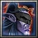
Warcraft III: the Demon Hunter
The foundation of the whole class: the demonic powers, the aesthetic and the lore. Every other influence orbits this core and expands it.
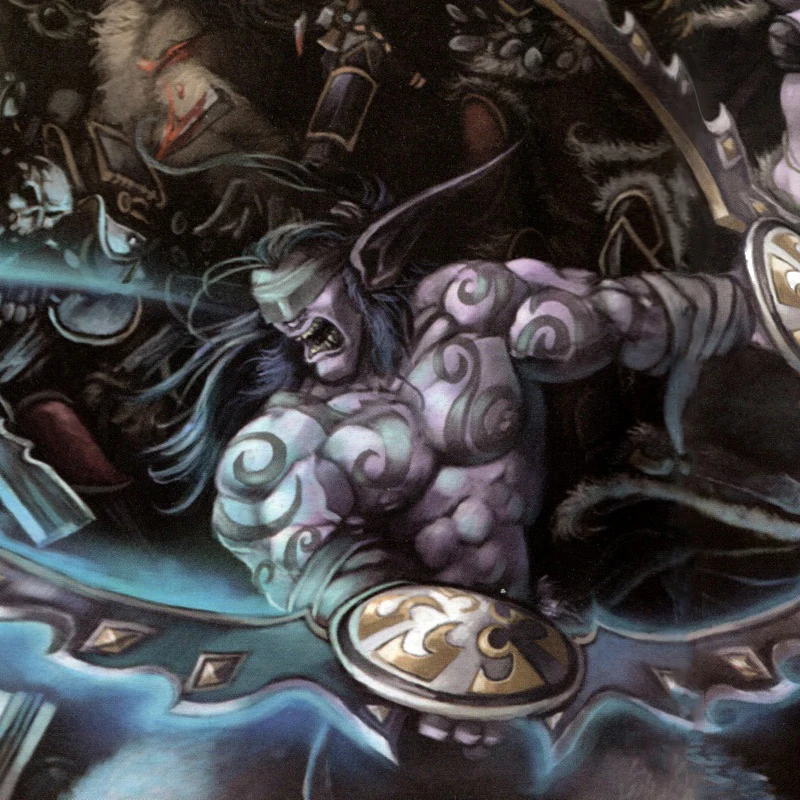
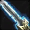
Melee Damage Dealer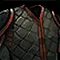
Leather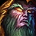
Night Elf (Alliance)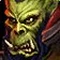
Orc (Horde)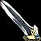
One-Handed Sword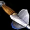
One-Handed Mace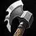
One-Handed Axe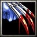
Fist WeaponAn endless war against demons, within and without.
Ten thousand years ago, a group of Night Elves made a solemn pact to turn the Burning Legion’s own power against it. Through a profane ritual of demon blood, they sacrificed their souls to keep demons at bay for millennia, scorned by the very people they protected.
However, everything changed after the Third War. The Night Elves lost their immortality, and so did the Demon Hunters. Demetrius Darkheart, the last of the Pact, desperately trains thousands before the next invasion comes. Azeroth must be protected, and the Demon Hunters must endure, even if that means sharing the Pact’s secrets with the Orcs.
You are one of them. Burning blood runs through your veins, and the demon within whispers, bargains and screams, demanding to be unleashed. Steady your blade and your mind, for the hunt is never over.
Playable on PC only.
Choose your specialization, drink a Demon Blood and enter the Hollow (a 3-to-5-minute experience).
How the class came to be, and where the idea came from.
The Demon Hunter is one of Warcraft’s most iconic archetypes. For my WoW: Forever design, I wanted a version faithful to the Warcraft III hero, not the demonic form Illidan takes on and is depicted in Retail.
The hero unit already hinted at three specializations through its abilities: Evasion, Mana Burn and Immolation. But every WoW class is a bundle of archetypes: the Warrior holds the footman, the knight, the grunt, the mountain king and more. A class built from a single hero limits its own potential. The Demon Hunter had to be bigger than the hero that inspired it.

The foundation of the whole class: the demonic powers, the aesthetic and the lore. Every other influence orbits this core and expands it.
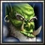
What the Warrior’s kit and fantasy left out of the Blademaster: Wind Walk, Mirror Image, flaming blades, and above all, the feeling of a samurai bound by a code of honor.
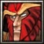
Another archetype no WoW class depicts: the Blood Elf warriors who manipulate magic, burn mana and break spells.
From there, each ability tree became a consequence: the acrobatics of a trained body, anti-magic powers, and the demon’s blood with its unique abilities. All three also mirror the class fantasy: a trained body and mind in control, against a demonic power that wants out.
I feel like a Demon Hunter is a class that should never let go of its target, with the mobility to make that possible: abilities that close the distance, movement speed above other classes, and pressure that grows with every hit, through shorter cooldowns, burned mana and each tree’s own spender. A Demon Hunter’s defense should be to kill faster than it dies.
Those strengths come at a price. The Demon Hunter has no self-healing outside Dreadlord’s Blood, and few ways to hold an enemy in place. Each weakness feeds the pillar: with no way to recover health, the only answer is to kill faster; with few ways to lock enemies down, the only answer is to use your mobility to stay on them.
Battle Rhythm comes from Heroes of the Storm: Illidan’s basic attacks in that game lower his cooldowns, incentivizing the player to keep attacking as much as possible.
That feeling stuck with me, and it fit a Demon Hunter who must stay on the offensive. At first, every ability had this reduction, but that would have made haste and weapon speed too desirable. So Battle Rhythm only applies to the strikes, the engine of each build, while the rest of the kit keeps a more standard cooldown. Strikes never come back on a fully predictable timer, and that makes playing a Demon Hunter feel alive.
I believe haste still becomes the best stat, for as long as mana holds, which creates a push and pull that mirrors the Demon Hunter itself: attack as hard as you can, but hold back enough to last the fight. Martial Arts sits most comfortably here, with haste already built in; the Spellbreaker wants haste to fuel its mana, competing with Mana Strike’s own resets; and the Felblood, like the blademasters and fire across Warcraft, leans more on critical strikes while still finding haste valuable.
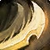
Physical · Agility · the most mobile
The agile Demon Hunter, always on the move and always striking. I built its combo around its movement abilities, so repositioning is part of the rotation: you are constantly cutting your way across the fight. It settles into a steady rhythm I find engaging, and as the simplest rotation of the three, it is naturally the fastest, cycling more often than any other spec.
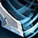
Arcane · Intellect and Spell Power · breaks casters
Geared for Intellect and spell power, the Spellbreaker has naturally weaker auto attacks, so I turned them into its engine: they restore mana and grant free Mana Strikes. Attacking fast and constantly speeds up the build-up to its final blow, which is also why Mana Scar needs so many charges: with free strikes feeding it, fewer would fire too soon. I also added Mana Breaker to give the player more to do than wait for the proc, and to lower the variance of depending on Mana Strike alone.
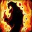
Fire from attack power · Strength · the toughest
The hardest to pin down. I landed on a mix of demonic power and fire: here the Demon Hunter draws on the infernal side of demons, so there is no Shadow damage, which fits Immolation and Burning Blades best. The rotation is simple, but split in two: the blades stoke their flames toward Eruption, while Immolation burns around you, waiting to be detonated for extra damage. Neither line is complex on its own, but managing both at once is very engaging.
Demon Bloods were born from the ritual: turning the idea of wielding demonic power into a mechanic. The inspiration came from the Warlock, who earns each demon through a quest and gets a specific tool from each one. But where the Warlock dominates demons from the outside, the Demon Hunter hunts them down, masters them from within and wields their traits.
In-game, drinking a blood would play a /sit and drink animation or, ideally, an exclusive one: sitting, preparing a ritual elixir and then drinking it.
I kept the bloods on the defensive and adventuring side: shorter downtime between fights, and each blood stronger against specific enemies. I want it to be an active choice based on what you are about to fight, and that would be far harder to design if the bloods dealt damage. Imp’s Blood has an offensive edge, but it depends on the enemy attacking, not on the Demon Hunter.
Each blood remains active until another blood is drunk, and cannot be used in combat.
Imp's Blood In the stage
Increases your Fire resistance by 30 and causes a very small amount of Fire damage to enemies that strike you in melee.
Satyr's Blood In the stage
Increases your movement speed by 5% and your health regeneration rate by 50% out of combat.
Felhunter's Blood In the stage
Increases your resistance to all magic by 20, increases your stealth detection and allows 25% of your mana regeneration to continue while casting.
Dreadlord's Blood
Causes your melee attacks to heal you for 3% of the damage they deal.
Pit Lord's Blood
Reduces all damage you take by 2% for each enemy within 8 yds of you, up to 10%.
“The ritual kills nine of every ten. Tell me why you will be the tenth.”Demetrius Darkheart
Drifters and outcasts, Demon Hunters were a rare presence amidst the most populated areas of Kalimdor. Yet their legends were not, ranging from dark saviors to blinded demons disguised in elven clothing, ever thirsting for power. But all legends agree on one thing: wherever a Demon Hunter is found, one can be certain that demons lurk nearby, by the hundreds.
Ten thousand years ago, as the Burning Legion invaded Azeroth, a group of Kaldorei led by Demetrius Darkheart swore to slay the demons with their own power. They drank an elixir of demon blood that burned away their eyes and corrupted their souls, and carved arcane runes into their skin to hold the power in. Not all had the physical and mental fortitude to endure it. Many became, at best, mindless husks, and at worst, power-hungry demons themselves. Those who survived helped turn the tide of the war, and earned a lifelong struggle against their own dark desires.
Over the next ten thousand years, the order dwindled. Some fell in the hunt. Others gave in, consuming more and more demonic energy until they became indistinguishable from the prey they once hunted. Masters tried to take only apprentices they deemed capable, but too often had to slay them with their own blades. Then came the Third War. At Mount Hyjal, the World Tree was sacrificed to destroy Archimonde, and the Kaldorei’s immortality died with it. Few apprentices survived, the old guard kept falling, and now time itself was against them. For the first time in ten thousand years, Demetrius saw the end of the Demon Hunters.
There was only one answer: more Demon Hunters. Demetrius began to seek out and train as many apprentices as he could, Night Elves and Orcs alike, his last hope before the Legion’s return. Gorthashi was the first to show Demetrius that possibility: he found the Orc fighting bravely against a Felguard. The Night Elf had already seen the Orcs, once slaves of the Legion, slay Mannoroth, the pit lord he himself had fought ten thousand years ago. A people capable of that was worth the risk.
To his surprise, most Orc initiates survived the ritual, their bodies already adapted by years of corruption. His own people called it madness: these were the same Orcs who slew Cenarius in a demonic rage, and who still fight the Kaldorei in Ashenvale. Rejected by their elven brethren, the Orc Demon Hunters began an order of their own, forged in honor and sacrifice. Once drifters and outcasts, the Demon Hunters now stand as two orders.
Heirs to ten thousand years of tradition, the young Night Elf Demon Hunters seek to preserve the teachings of Demetrius. Where their elders were bound only master to apprentice, they are bound to each other, in a brotherhood of pain and vengeance, for everyone lost since the Third War. They keep the Pact’s tradition alive: meditation, discipline and restraint. Few trust their Orc brothers, and skirmishes between the two orders grow more common.
Founders of a new order, the Warblades answer for the sins of their clans. Most come from the Burning Blade, whose blademasters broke free of the demons’ influence while the rest of the clan became the cult that still lurks in Orgrimmar’s shadows. To them, defiling their souls to protect their own is no sacrifice, but an honor. Where the Pactbound stand as equals, the Warblades answer to rank: Initiates who have yet to face the ritual, Demon Hunters who survived it, and Blademasters, whose title is earned through deeds, never inherited. They expect no welcome, and ask for none.
The last survivor of the Pact sworn ten thousand years ago. Over the millennia, Demetrius has buried comrades, apprentices and friends, and at Mount Hyjal he watched still more of them fall. What remains is a cold urgency, and it worries even those closest to him.
After the Third War he trained many Night Elves, and the ritual took most of them. Within a year, no more than twenty had survived. Demetrius needed more, many more. During a hunt, an Orc named Gorthashi showed him another way: a brave soul, ready to die fighting demons. This could be it. The training of Orcs began with Gorthashi, and grew fast.
The older Night Elf Demon Hunters, most of them his own surviving disciples, have turned their backs on him, believing he has betrayed their Pact by sharing it with the once-slaves of the demons. Demetrius does not care. All that matters is that there are enough hunters to keep Azeroth safe, long after he is gone.
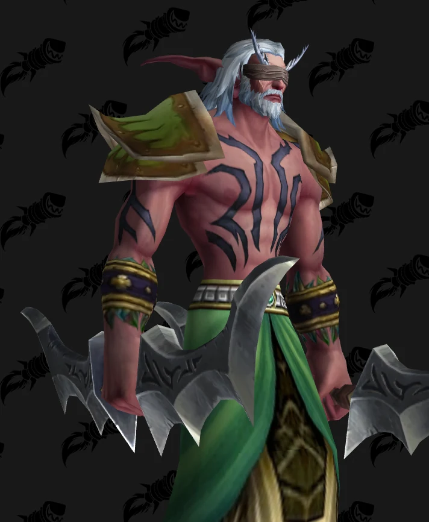
World of Warcraft model, © Blizzard Entertainment. Render via Wowhead.
The Burning Blade had lost its honor long before, in the wars where Mannoroth’s blood drove its warriors into a mindless frenzy. Gorthashi fought among them. But when the clan gave itself fully to the demons, he stopped, saw how far he had fallen, and walked away.
He tried to atone alone, protecting the helpless of Kalimdor and hunting the demons that preyed on them. He did not always succeed. Facing a Felguard, he was ready to die, honorless and forgotten. Then, an elf appeared, saving his life in a dance of blade and flame.
In Demetrius, he found a true path: a way to reclaim his honor by protecting those who cannot protect themselves, destroying the evil that tarnished him and his former brethren. Gorthashi became the first Orc Demon Hunter.
He still calls Demetrius master, and means it. The two work side by side: the divide between Pactbound and Warblades was born among the disciples, not the masters. Skirmishes are a nuisance. The Legion is the war.
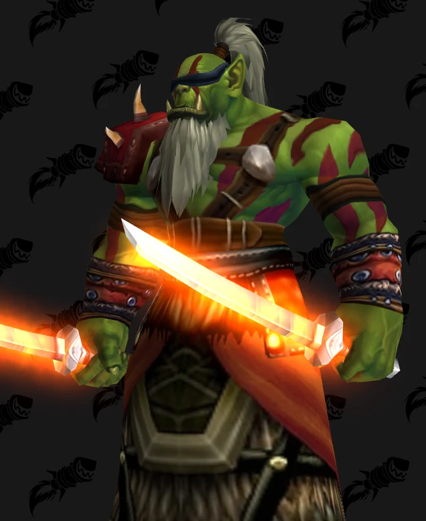
World of Warcraft model, © Blizzard Entertainment. Render via Wowhead.
This lore had two problems to solve: how to bring Demon Hunters to the Horde, and why there are suddenly so many of them. I also wanted it to be completely agnostic to Illidan, to make it feel like Illidan is small compared to what Demon Hunters are in Azeroth, and not leash the class to a single figure.
For a Horde Demon Hunter, the Orcs’ history with demons and the blademaster tradition fit far better than the alternatives. In the World of Warcraft RPG (2006), Demon Hunters can already set their blades aflame, just as the Burning Blade’s blademasters did before battle. The clan then became the heart of the Horde’s Demon Hunters.
Demetrius holds the restrained core of the Warcraft III Demon Hunter, even as he breaks its traditions. Gorthashi pushes the order beyond it. An Orc seeking honor through sacrifice, a wandering samurai saving the world from a greater evil: once those pieces came together, my mind was buzzing.
The rest was asking why, again and again. Why would Demetrius train new hunters? Why Orcs? Why are there so many on both sides? Why do they fight in the wars between Horde and Alliance? The lore answers each one, and leaves Azeroth with more conflict and more room for stories to be told.
Every ability and talent in the stage, for reference.
Double Strike
Strikes twice in quick succession, first with your main hand and then with your off-hand weapon. Each strike causes 64% weapon damage plus a small amount of additional damage.
Dive
Dives at the target and lands on its other side, causing a small amount of damage.
Blade Dash
Dashes 7 yds forward, striking all enemies in your path for 26% of your main hand and off-hand weapon damage plus a moderate amount of additional damage. Cannot miss, be dodged or be parried.
Wind Walk
Increases your movement speed by 40% and your chance to dodge attacks and spells by 40% for 5 sec. Using any ability or attacking ends the effect.
Battle Rhythm
Each of your melee weapon hits that lands reduces the remaining cooldown of your Double Strike, Mana Strike and Flame Strike by 0.5 sec.
The Hunt
Leaps at the target and stuns it for 1 sec. During the stun, you make 5 extra melee attacks, alternating between your main hand and off-hand weapons.
Improved Blade Dash Tier 2 · 2 ranks
Reduces the cooldown of your Blade Dash by 2/4 sec.
Muscle Memory Tier 3 · 5 ranks
Gives your melee auto attacks a 2/4/6/8/10% chance to make your next ability cost no mana. That ability does not interrupt your mana regeneration.
Momentum Tier 5 · 5 ranks
Each hit of your Double Strike that lands grants you a stack of Momentum, increasing your movement speed by 0.5/1/1.5/2/2.5%. Stacks up to 4 times. Lasts 30 sec. Your Blade Dash consumes up to 4 stacks of Momentum, increasing its damage by 20% for each stack consumed.
Hunt Prey Tier 7 · 1 rank
When your Blade Dash consumes 4 stacks of Momentum, the cooldown of your Dive is reset and your next Dive within 5 sec has no minimum range, costs no mana, deals 500% additional damage and does not trigger the global cooldown.
Mana Strike
An instant strike that causes Arcane damage equal to 3 times your main hand weapon's damage per second. If the target has mana, also burns mana equal to 100% of the damage dealt and causes 50% of that amount as additional Arcane damage.
Disrupt
Interrupts the target's spellcasting, burning mana equal to the interrupted spell's cost and causing Arcane damage equal to 50% of the mana burned. Prevents any spell in that school from being cast for 4 sec.
Shackle Demon
Shackles the target demon for up to 30 sec. The shackled demon is unable to move, attack or cast spells, and any spell it is casting is interrupted. You stop attacking the target until you click on it or attack it again. Any damage caused will break the effect. Only one target can be shackled at a time.
Still Mind
Try to focus your mind for 2 sec. While channeling, your mana regeneration is active and increased by 1400%.
Mirror Image
Splits your form into 3 images of yourself for 15 sec, causing enemies to lose track of you and removing all your threat. Each image has 25% of your maximum health, starting at the same share of health as you. The images surround your target, attack it and use Mana Strike. If you have Mana Charge, each Mana Strike they land grants you a stack of it.
Mana Breaker
Breaks the target's defenses with a blade of arcane energy, causing Arcane damage equal to 6.75 times your main hand weapon's damage per second and granting you 2 stacks of Mana Charge. If the target has mana, also burns mana equal to 100% of the damage dealt and causes 50% of that amount as additional Arcane damage.
Mana Scar
Gathers your focus, then cuts the target twice in quick succession with blades of mana, first with your main hand and then with your off-hand weapon. Each cut causes Arcane damage equal to 12.6 times that weapon's damage per second. Can only be used while you have 8 stacks of Mana Charge, and consumes them after the second cut.
Mental Clarity Tier 3 · 5 ranks
Gives your melee auto attacks a 3/5/8/11/13% chance to restore mana equal to 5 sec of your mana regeneration.
Mana Weaving Tier 5 · 1 rank
Each time your Deep Meditation deals damage, the cooldown of your Mana Strike is reset and your next Mana Strike costs 50% less mana.
Mana Charge Tier 5 · 5 ranks
Each of your Mana Strikes that lands has a 20/40/60/80/100% chance to grant you a stack of Mana Charge, increasing the magic damage you deal by 1%. Stacks up to 8 times. Lasts 15 sec, and each new stack refreshes the duration.
Flame Strike
An instant strike that causes 36% weapon damage plus an additional small amount as Fire damage, and sets your weapons ablaze with Burning Blades, reducing your attack speed by 5% and causing your melee auto attacks to deal an additional 10% of weapon damage as Fire damage per stack. Can be applied up to 3 times. Lasts 9 sec.
Immolation
Engulfs you in flames, causing a very small amount of Fire damage every 1 sec to all enemies in melee range. Lasts 10 sec.
Demonic Skin
Hardens your skin with demonic power, reducing all damage you take by a moderate amount for 15 sec.
Metamorphosis
Transforms you into a half-demon, increasing your haste by 20%, armor by 50% and health by 25%. Lasts 15 sec.
Eruption
Makes the flames on your weapons erupt into the target, causing Fire damage equal to 32% of your attack power plus a large amount. Requires 3 stacks of Burning Blades, and consumes them.
Demonic Thirst Tier 3 · 3 ranks
Your Fire critical strikes restore mana equal to 1.3/2.7/4% of your base mana.
Infernal Release Tier 4 · 1 rank
While your Immolation is active, using it again makes it explode for 50% of the total damage it deals to one target over its full duration, increased by 5% for each second it has been active, hitting all enemies within melee range. Ends the Immolation and does not trigger the global cooldown. If the Immolation ends on its own, it does not explode.
Mixed Blood Tier 4 · 1 rank
Allows you to have two Demon Bloods active at the same time.
Played it? Tell me what worked, what didn’t, and what you would change.
Your vote, your answers and the stats of your last run (spec, Demon Bloods, wave reached, time and damage) are stored privately and used only to improve this design. Only vote totals appear on this page. Contact is optional and never shared.
Designer’s Commentary
How do you best present a class design to the public? Let them play it!
Three level 40 Demon Hunter specs, as close to the designed rotations as I could make them, and a challenge to conquer with each. It grew out of an internal prototype built to test how the class feels and to rough out the balance of its core loop and the Battle Rhythm mechanic, where every hit brings your strikes back sooner.
Instead of reading pages and pages of documents, anyone can understand the class intuitively by playing it, inside a recreation of World of Warcraft’s combat.
Turning that prototype into a stage meant balancing the three specs against each other and designing enemies that teach the class one piece at a time: a caster to learn the basics, a swarm to feel the Demon Hunter’s area damage, two casters at once to test what you’ve learned, and a Felguard that asks for real mastery. The waves are also meant to wear you down. Spent cooldowns, lost health and lost mana carry over, so how you win one wave decides how ready you are for the next.
I had a lot of fun making, balancing and playing this stage, and I hope you did too!